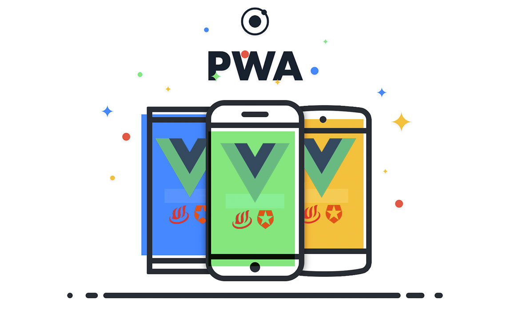

|  | |
DefiniciónLAS "APLICACIONES WEB PROGRESIVAS" También conocidas como “PWA” traducido al acrónimo de inglés (Progressive Web Apps) es un software de aplicación que se crea por medio de la web, se creó utilizando algunas tecnologías web comunes de HTML, CSS y JavaScript. Sus propósitos es que deben funcionar por cualquier plataforma que use un navegador compatible con los estándares. La aplicación web progresiva es similar a una página web o un sitio web es más conocido como una “aplicación web” no requiere de algún requisito específico para que los desarrolladores o usuarios instalen estas aplicaciones web por medio de sistemas de distribución digitales conocidas que son Apple App Store o Google Play. El objetivo de las aplicaciones web progresivas es proporcionar a los usuarios una experiencia muy completa del sitio web con sus características optimizadas y un diseño de interfaz de una aplicación nativa. Los PWA que se ejecutan en dispositivos móviles tienden a funcionar mucho más rápido y te pueden proporcionar más funciones, es decir son portátiles en las plataformas de escritorio y móviles. |
|
AntecedentesEl lanzamiento del ¡Phone! original en 2007 este revolucionó la industria de diversas maneras en la que nosotros pensamos. En principio Apple no tenía dentro de sus orígenes una tienda como es la App Store después tuvo que firmar un convenio con desarrolladores móviles externos para poder crear apps para el ¡Phone. A principios de la década de 2010, las páginas web dinámicas permitieron utilizar las tecnologías web para crear aplicaciones web interactivas. Las continuas mejoras en HTML, CSS y JavaScript permitieron que las aplicaciones web incorporaran mayores niveles de interactividad, haciendo posible experiencias similares a las nativas en un sitio web y, por lo tanto, en PWA. |
|
TecnologíaLa tecnología que se usa para desarrollar las PWA es que proporciona un sistema multiplataforma, e independiente del navegador y del sistema operativo lo que significa que no es necesario desarrollar una programación específica para cada sistema operativo, por el cual abarata enormes costes. El funcionamiento se apoya en la tecnología Service Worker, es gracias a esto las apps funcionan sin acceder al navegador, otros de los puntos importantes y fuertes es la App Shell con la que se consigue que usuario pueda ver sin las esperas del layout y la interfaz. |
|
Aplicaciones Web Progresivas© Copyright 2021. Guillermo Antonio Cruz Galdámez |
|